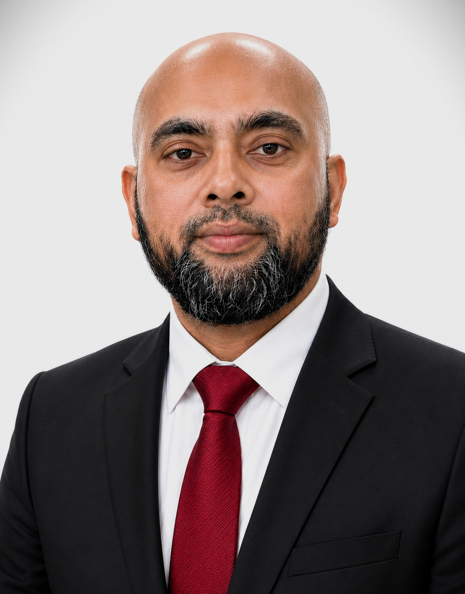

Professional inquiries
Let’s Connect
Whether you are seeking structural engineering consulting, bridge engineering expertise, technical collaboration, a research partnership, or a speaking engagement, I would be pleased to hear from you.

Moniruzzaman Moni, PhD, P.Eng.
Emailmoni98ce@gmail.com
LocationToronto, Ontario, Canada
Current positionSenior Structural Engineer
Ministry of Transportation Ontario
Ministry of Transportation Ontario
LinkedInProfessional profile
ResearchGoogle Scholar
Areas of expertiseBridge Engineering · Buildings · Nuclear · Seismic · Transportation Infrastructure
Send a Message
Thank you for your interest. Please complete the fields below to prepare an email message.
Submitting this form opens your default email application. No information is stored on this website.